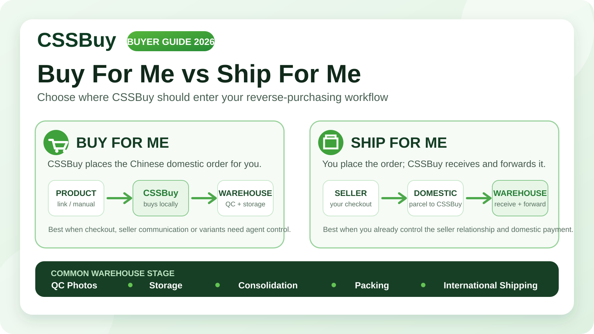

CSSBuy Buy For Me vs Ship For Me 2026: The Reverse-Purchase Handoff
A CSSBuy reverse purchase can begin in two very different ways. In one workflow, CSSBuy becomes the buyer inside China: you provide the product information, pay for the item and domestic delivery, and CSSBuy places the order with the seller. In the other, you buy the item yourself and use CSSBuy mainly as the receiving, inspection, consolidation and international-shipping layer. CSSBuy currently labels these paths “Buy For Me” and “Ship For Me.”
The difference sounds small, but it changes who controls the domestic transaction, who must communicate with the seller, what information needs to be captured before payment, and where problems are easiest to solve. Choosing the wrong path can turn a simple purchase into a chain of manual corrections. Choosing the right one makes the warehouse stage much cleaner.
Start with one question: who should place the Chinese domestic order?
If you cannot or do not want to complete the Chinese checkout yourself, Buy For Me is the natural workflow. CSSBuy’s current purchasing instructions say buyers can paste a product link into the search field or search by product name. The published platform list includes Taobao, Tmall, JD, No.1, VIP Shop, Dangdang, 1688, Yupoo and WeChat. When a normal product page cannot be read, CSSBuy points buyers to Expert Buy or manual product submission.
That matters because many reverse-purchasing problems are not really shipping problems. They are information problems at the moment of purchase. A color is described differently by the seller, a size chart is unclear, a 1688 listing has a minimum quantity, or a Yupoo seller expects the buyer to specify a code in a message. Buy For Me gives you a place to hand those details to the purchasing agent before the domestic order is placed.
Ship For Me starts later. CSSBuy describes it as a forwarding workflow: you purchase the goods yourself and send them to its Hangzhou warehouse. CSSBuy then receives, stores, checks, consolidates and ships the goods internationally. This route makes sense when you already know how to buy from the seller, can use the seller’s payment method, and want CSSBuy to handle the physical logistics rather than the domestic checkout.
Buy For Me is about purchase execution; Ship For Me is about logistics execution.
Where Buy For Me gives you the most value
Buy For Me is strongest when the domestic purchase contains variables that need to be translated into a controlled order. CSSBuy’s current flow asks for color, size and quantity, and it also supports manual product information when the listing cannot be processed normally. The current Expert Buy form exposes the logic clearly: item URL, title, images, note, price, domestic shipping and quantity are all separate inputs.
Treat those fields as a purchase specification, not clerical paperwork.
If the seller has five versions of the same shoe, do not write “black pair.” Record the exact version name or code. If the listing uses Chinese size labels, keep the seller’s original size reference in the note instead of translating it into a vague international size. If a Yupoo album requires a seller quote, capture the quoted price before paying. If 1688 has a minimum order quantity, confirm that before you fund the purchase.
The cleaner the specification, the less room there is for the wrong item to be purchased correctly.
The money flow is another reason to separate the two models
In Buy For Me, CSSBuy’s published steps separate the domestic purchase from the international shipment. At the purchase stage, the buyer pays for the item and Chinese local delivery. After the seller sends the item to the warehouse, CSSBuy performs inspection and storage. Only when you later submit the stored item for delivery do you choose an international shipping method and pay the international shipping deposit.
With Ship For Me, you have already handled the seller-side payment yourself. CSSBuy’s role begins when the domestic parcel is directed to its warehouse. Your budgeting therefore has three ledgers: the seller purchase you paid directly, the domestic delivery you arranged to the CSSBuy warehouse, and the international parcel you will later submit through CSSBuy.
Warehouse control is similar, but the responsibility before arrival is different
Once an item reaches the warehouse, the two paths become more similar. CSSBuy’s Buy For Me page says warehouse staff carry out quality inspection and take photos for the buyer to view. Its Ship For Me page also lists QC checking as a service and says photos can be taken so problems can be identified before international shipment.
With Buy For Me, CSSBuy has the purchase record it created: the ordered option, seller transaction and order notes are inside the agent workflow. With Ship For Me, you made the purchase outside CSSBuy. The warehouse can inspect what arrives, but it did not create the seller order. That means your forwarding submission needs better identification.
Use a unique parcel reference for each incoming shipment. Keep the seller order number, item name, quantity and expected variant in your own record. If several independent sellers are sending packages to the same warehouse account, do not rely on memory to match them later.
Why Ship For Me can be the better choice for experienced buyers
Buying directly from the seller can give you more control over the domestic transaction. You may have an established supplier relationship, a Chinese payment method, a negotiated price, a private WeChat seller, or a marketplace account with your own purchase history. In those cases, forcing the purchase through an agent may add an unnecessary communication layer.
CSSBuy currently lists package consolidation as a forwarding service. If separate domestic parcels reach the warehouse, they can be combined into a larger international parcel. This is one of the main economic reasons to use a forwarding warehouse: the seller does not need to know your overseas destination, and ten domestic deliveries do not need to become ten international shipments.
CSSBuy also publishes up to 90 days of free warehouse storage for Ship For Me. That gives buyers time to accumulate compatible purchases, but the storage period should be treated as planning capacity, not permission to forget inventory. Record arrival dates and decide in advance which buying cycle will trigger parcel submission.
Packing services change the economics of forwarding
CSSBuy’s current Ship For Me page lists vacuum packaging, reinforced packaging and label cutting among its services. These are small operational details with large shipping consequences.
Vacuum packaging is useful for compressible clothing because some express services calculate volumetric weight. Removing air can reduce box volume even when actual weight does not change. Reinforced packaging is the opposite decision: it may add material and some weight, but it can reduce damage risk for fragile goods. Label cutting or invoice removal may be requested when appropriate, although buyers remain responsible for following destination-country rules.
Do not request every service automatically. Match the service to the item.
A puffer jacket may benefit from vacuum packing. A structured leather bag may be damaged by aggressive compression. A ceramic object may need reinforcement even if the final parcel becomes slightly heavier. A branded presentation box may be valuable to you even when removing it would lower dimensional weight.
1688 deserves its own decision rule
CSSBuy’s Buy For Me instructions specifically warn that many 1688 products have minimum order quantities and that 1688 purchases use a different quality-control standard. This is a signal that wholesale-oriented listings need more pre-purchase discipline.
Use Buy For Me when you need CSSBuy to execute a complex 1688 order and you want the variant, quantity and domestic purchase communication captured in the agent workflow. Use Ship For Me when you already have a supplier relationship, have negotiated the order directly and only need a warehouse for receiving and export.
In both cases, inspect a wholesale order as a batch. If you bought twelve units in three colors, your QC question is not “Does the product look okay?” It is “Did twelve units arrive, is the color distribution correct, and are the visible specifications consistent across the batch?”
Choose the workflow before you copy the product link
Choose Buy For Me when you need CSSBuy to place the seller order, when the marketplace is difficult for you to pay directly, when a product page can be processed through CSSBuy, or when Expert Buy/manual submission gives you a safer way to document a non-standard purchase.
Choose Ship For Me when you can complete the Chinese purchase yourself, when you already communicate directly with the seller, or when your main need is warehouse receiving, QC, consolidation, storage and international forwarding.
If you are unsure, ask which side of the transaction contains the greatest risk. If the risk is ordering the wrong variant, misunderstanding the seller or paying the domestic seller, keep CSSBuy involved from the Buy For Me stage. If the domestic purchase is already under control and the risk is mainly consolidation, packing and international shipping, Ship For Me is usually the cleaner model.
Build a handoff checklist
Whichever path you choose, write a short handoff record before money moves.
For Buy For Me, record the seller link, exact title, variant, size, color, quantity, product price, domestic freight, seller promises and any special instruction. If CSSBuy cannot retrieve the listing automatically, manual submission should reproduce the order accurately enough that another person could place it without guessing.
For Ship For Me, record the external seller order number, expected domestic tracking number, number of parcels, item contents, quantities and the CSSBuy warehouse submission reference. If the seller splits one order into two cartons, update your record before the second carton arrives.
At the warehouse stage, review QC promptly. Before international submission, decide which items belong together, what packaging can be removed, what must be protected, and whether any restricted item could eliminate otherwise useful shipping routes.
The best reverse-purchasing workflow is the one with the fewest invisible assumptions
Buy For Me and Ship For Me are not competing versions of the same service. They place the handoff at different points.
Buy For Me hands the seller-side purchase to CSSBuy and gives you a structured path from product specification to warehouse inspection. Ship For Me leaves the purchase under your control and hands CSSBuy the physical logistics after the seller dispatches domestically.
If you are new to Chinese marketplaces, Buy For Me usually reduces the number of domestic steps you must personally control. If you already buy directly from Chinese sellers, Ship For Me can preserve your supplier relationship while still giving you consolidation, QC, storage and parcel services.
The practical rule is simple: decide where CSSBuy should enter the chain before you place the order. That single choice determines what evidence you need, what costs you must track and how much control you retain over the domestic transaction.